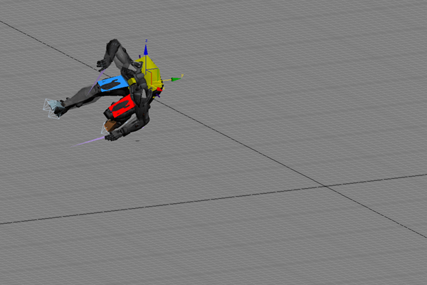
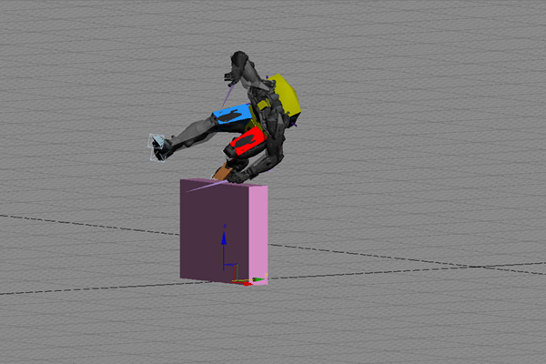
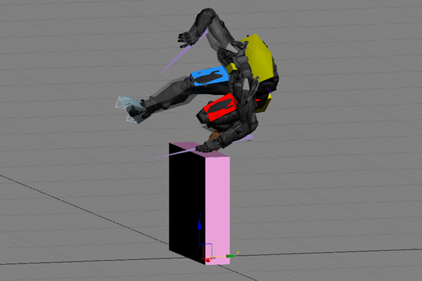
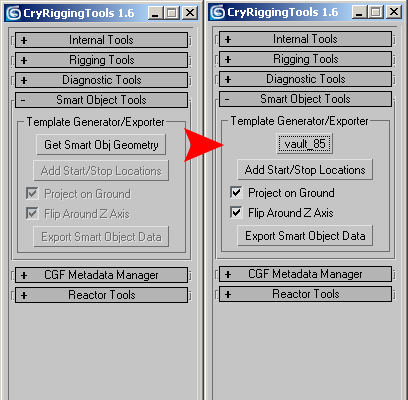
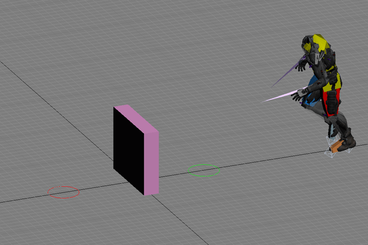
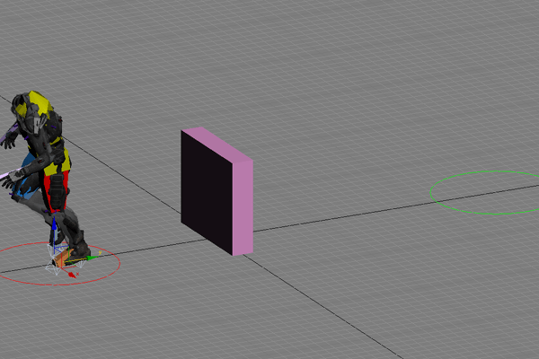

Overview
The term "Smart Object" describes an object that is set up to interact with one or more other objects in the game. Specific rules can be created that define which object will interact with which other object. These rules are based on the class and state of an object and apply to all objects in the game completely independent from the object model or the level the object is placed in.
Exporting Smart Objects
Learn how to export smart objects from various Digital Content Creation (DCC) tools.
Exporting Smart Objects from 3ds Max
This will be a short primer on creating Smart Objects in Max using the cryTools Smart Object exporter.

First, load up an animation that was made to use a Smart Object.

Create geometry that is the same height as the animation, this is the geometry that the Designers will see when they place the Smart Object in the level.
Make sure the Smart Object object has its pivot centered at the base.

The animation needs to be offset from the Smart Object, and the Smart Object needs to be at the origin [0,0,0].
The easiest way to do this is to parent the root of the character to the Smart Object Object, then move the Smart Object Object to the origin (above).

Now open cryRigging, which is part of cryTools (AboutCryTools). With the Smart Object Object selected, press Get Smart Obj Geometry and you will see the button change to the name of the object.

Then click Add Start/Stop Locations, and you will see the start and stop locations added. Green is the Start and Red is the Stop

Align the circles and radii to the start and stop locations/areas of the animation. Finally, click Export Smart Obj Data to export the XML file.
Then export the Smart Object Object as a CGF.
Then save the Smart Object and start/stop locations as a Max file to merge into other Smart Object animation files you have.
Things to Remember
- Your Smart Object geom should be at 0,0,0.
- Your animation should be offset from 0,0,0.
- You should export your Smart Object as a CGF with the correct name and run it by design to make sure it is the size they need.
- There should be no transforms applied to your Smart Object geometry (reset XForm).
- The local Y axis of the Smart Object must face the direction the character enters it.
- If it is a bidirectional Smart Object, the local Y axis of each helper must face inward.
- It is critical to give the Smart Object to AI Smart Object they can test it.
- You must save a max file, the Smart Object xml, and the CGF.
- The max file is needed in case that in the future there are any changes needed.
- The Smart Object helpers should not be children of the Smart Object geometry when you export it as a CGF.
- By default they are children of the Smart Object when you export the XML, this also allows easy placement/aligning.